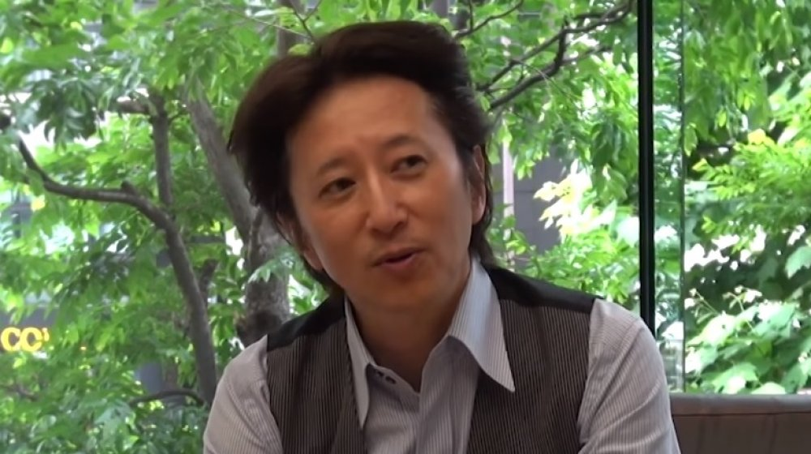

Hirohiko Araki
Hirohiko Araki (荒木 飛呂彦, Araki Hirohiko?), nascido em 7 de Junho de 1960, no Japão, é um Mangaká.
Araki é mais conhecido pelo seu trabalho ainda corrente JoJo's Bizarre Adventure, publicado inicialmente na Weekly Shonen Jump começando em 1987. A série é cheia de referências à música ocidental e à Itália, ambas paixões de Araki. Muitos de seus trabalhos foram publicados na Europa, mas só JoJo's Bizarre Adventure e Baoh foram lançados nos Estados Unidos. Uma teoria popular é que suas constantes referências musicais são protegidas por direitos autorais. Viz Media driblou esse problema em JoJo's Bizarre Adventure, repondo com outros nomes muitas de suas referências.
Araki já recebeu vários prêmios, incluindo o Prêmio Tezuka.